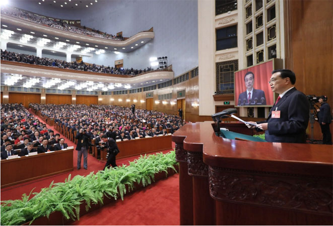

汤阴三资：网站首页 -> 工作动态
李克强设专项资金：集中攻关打一场雾霾“歼灭战”李克强设专项资金：集中攻关打一场雾霾“歼灭战”
时间：2016-11-21 来源：管理员

3月5日，第十二届全国人民代表大会第五次会议在北京人民大会堂开幕。国务院总理李克强作政府工作报告。 新华社记者 兰红光 摄
3月17日下午，李克强总理为落实《政府工作报告》工作加入一项新任务：设立专项资金，组织相关学科优秀科学家，集中攻关雾霾形成机理与治理。
“我这次参加陕西代表团讨论时，一位中科院院士告诉我，他们经过十多年跟踪研究发现，中国北方冬季雾霾在全世界都是特殊的，除了我们熟悉的燃煤、尾气排放和扬尘等，还有其他影响因素。”总理在国务院常务会议上说，“这项工作没有写进《政府工作报告》，但我在记者会上做出承诺。今天我们就确定下来，要跨部门组织多学科科学家集中开展攻关，专心做好这一件事，坚决打胜这场雾霾‘歼灭战’！”
两天前的记者招待会上，李克强在回答记者提问时明确表示，国家将设立专项基金，不惜重金组织最优秀的相关科学家集中攻关，抓紧把雾霾形成的未知因素研究透，使治理更加有效。在17日的常务会上，有关部门负责人也表示，现在雾霾研究主要溯源到一次排放，对二次排放的一些机理还没有研究清楚。设立专项资金，把雾霾二次形成的机理搞清楚，对科学治理“非常重要”。
3月15日，国务院总理李克强在北京人民大会堂与中外记者见面，并回答记者提问。中新社 杜洋 摄
“现在我们观测雾霾的几种方法，无论是‘微量振荡天平法’还是‘β射线法’，都分不清什么是